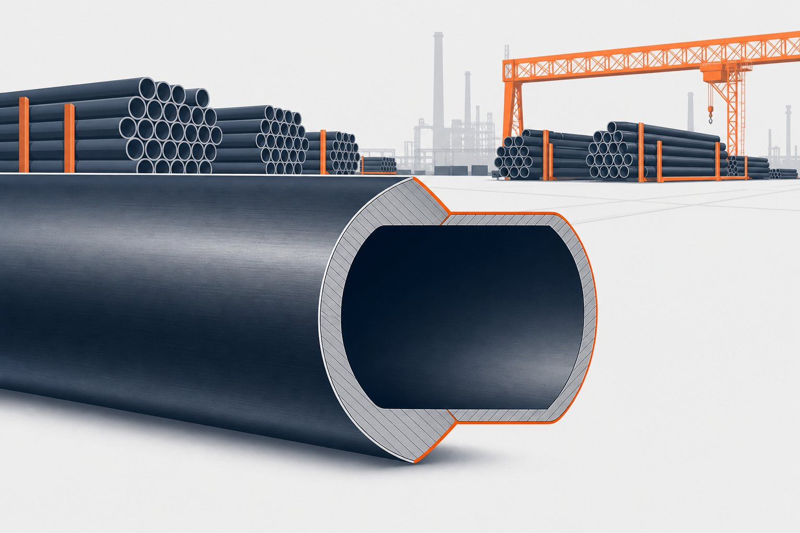

جایگاه گرید ایکس۵۲
در طیف گریدهای لوله خط انتقال، گرید ایکس۵۲ نقطه تعادل کلاسیک است: استحکامی که فشارهای متوسط تا بالا را پوشش میدهد، جوشپذیریای که اجرای میدانی را ساده نگه میدارد و قیمتی که اقتصاد پروژه را حفظ میکند. به همین دلیل در خطوط انتقال داخلی، این گرید یکی از پرتکرارترین انتخابهاست.

مشخصات مکانیکی و شیمیایی
| خاصیت | مقدار مشخصه |
|---|---|
| حداقل حد تسلیم | حدود ۳۵۸ مگاپاسکال |
| حداقل استحکام کششی | حدود ۴۵۵ مگاپاسکال |
| سطوح مشخصه | سطح مشخصه محصول ۱ و ۲ |
| تست ضربه | برای سطح مشخصه محصول ۲ الزامی |
| روشهای ساخت رایج | بدون درز، درزجوش مقاوم الکتریکی، درزجوش قوس زیرپودری |
در سطح مشخصه بالاتر، کنترل معادل کربن برای تضمین جوشپذیری و الزام تست ضربه برای تضمین چقرمگی اضافه میشود؛ ترکیبی که این گرید را برای خطوط اصلی نیز قابل اتکا میکند.
کاربردهای رایج
- خطوط انتقال نفت و گاز با فشار متوسط تا بالا.
- خطوط تغذیه و توزیع در سایزهای مختلف.
- خطوط داخل پالایشگاه و پتروشیمی که الزام خط انتقال دارند.
- پروژههایی که تعادل هزینه-عملکرد اولویت اول است.
سرویس ترش
در خطوط حاوی سولفید هیدروژن، این گرید با رعایت الزامات پیوست سرویس ترش قابل استفاده است: محدودیت سختی، کنترل ترکیب شیمیایی و ریزساختار و تستهای ترکخوردگی. هماهنگی با استاندارد مقاومت در برابر ترک و ذکر صریح شرایط سرویس در استعلام الزامی است.
چکلیست استعلام
- گرید و سطح مشخصه محصول را صریح بنویسید.
- روش ساخت مورد پذیرش پروژه را مشخص کنید.
- نوع انتها، طول شاخه و پوشش را ذکر کنید.
- در صورت سرویس ترش، پیوست مربوطه را درخواست کنید.
- گواهی مواد با شماره ذوب و گزارش تستها را بخواهید.
تستها و بازرسیهای اصلی
- تست هیدرواستاتیک هر شاخه مطابق فرمول استاندارد.
- بازرسی غیرمخرب کامل درز جوش در روشهای جوشی.
- تست ضربه برای سطح مشخصه محصول بالاتر در دمای مشخصه.
- کنترل ابعاد، بیضوی، ضخامت و صافی انتهای لوله.
- بازرسی چشمی سطح، پوشش و درپوشها پیش از حمل.
نکته مهم در تحویل، تطابق شماره ذوب حکشده روی شاخهها با گواهی مواد است؛ این ردیابی، مبنای بازرسی و پذیرش محموله در سایت پروژه محسوب میشود.
جمعبندی
گرید ایکس۵۲ انتخاب کمریسک و اقتصادی برای اکثر خطوط انتقال با فشار متوسط تا بالا است؛ با استعلام دقیق و مدارک کامل، خریدی مطمئن خواهید داشت.
سوالات رایج
معنی عدد ۵۲ چیست؟
عدد گرید حداقل حد تسلیم مشخصه بر حسب هزار پوند بر اینچ مربع است؛ یعنی این گرید حداقل حد تسلیمی حدود ۳۵۸ مگاپاسکال و حداقل استحکام کششی حدود ۴۵۵ مگاپاسکال دارد.
این گرید بیشتر با چه روش ساختی عرضه میشود؟
در سایزهای کوچک و متوسط با درزجوش مقاوم الکتریکی یا بدون درز و در قطرهای بزرگ با درزجوش قوس زیرپودری. انتخاب روش ساخت به سایز، فشار و الزامات بازرسی پروژه بستگی دارد.
برای سرویس ترش قابل استفاده است؟
بله، با رعایت الزامات پیوست سرویس ترش شامل محدودیت سختی، ترکیب شیمیایی و تستهای مربوطه. در این حالت ذکر صریح شرایط سرویس در استعلام الزامی است.
چرا این گرید در پروژهها محبوب است؟
تعادل خوب بین استحکام، جوشپذیری، قیمت و در دسترس بودن باعث شده انتخاب کمریسکی برای طیف وسیعی از خطوط باشد؛ نه به جوشپذیری گریدهای پایین نیاز دارد نه هزینه گریدهای بالا را دارد.
مطالب مرتبط
- راهنمای لوله خط انتقال؛ سطوح مشخصه و گریدها
- مقایسه گریدهای ایکس۵۲، ایکس۶۰ و ایکس۶۵
- لوله خط انتقال گرید ایکس۴۲
- لوله خط انتقال گرید ایکس۶۵
- استاندارد مقاومت در برابر ترک (NACE MR0175) در لوله و فلنج
در استعلام، سطح مشخصه محصول، روش ساخت، نوع انتها و شرایط سرویس (عادی یا ترش) را مشخص کنید. گواهی مواد و گزارش تستها همراه محموله ارائه میشود.
مشاهده صفحه محصول ← ثبت RFQ همین محصولتامین این تجهیزات را به پیشرو تجهیز فرتاک بسپارید
شرکت پیشرو تجهیز فرتاک تامینکننده تخصصی تجهیزات صنعتی برای پروژههای نفت، گاز، پتروشیمی، فولاد و نیروگاهی است. برای دریافت پیشنهاد فنی و قیمت، استعلام (RFQ) خود را ثبت کنید تا کارشناسان مهندسی فروش در کوتاهترین زمان پاسخ دهند.
- تامین لوله انتقاللوله خط انتقال با گواهی مواد و نتایج تست
- تامین تجهیزات صنایع نفت و گازپکیج مواد پایپینگ مطابق مدارک پروژه